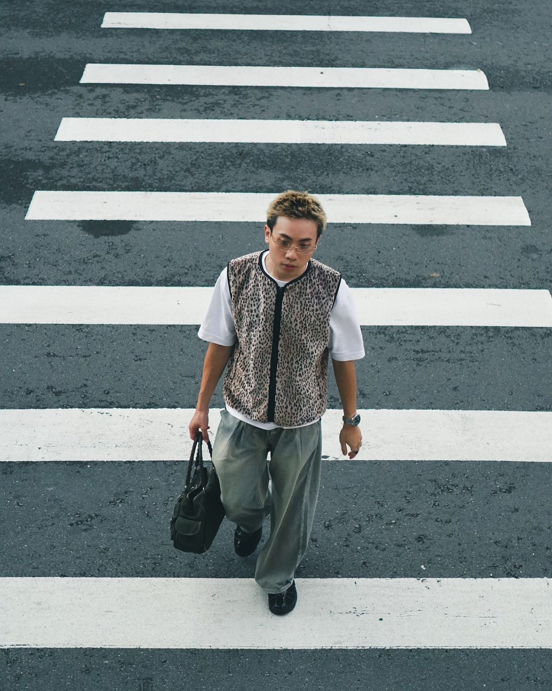

USER RESEARCH · CONTENT · EXPERIENCE
Hong-Qi Lu
I work across user research, content strategy, and experience design.
透過研究、資訊整理與互動設計，將複雜問題轉化為清楚且可執行的體驗方向。
SCROLL
BASED IN TAIWAN
USER RESEARCH · CONTENT · EXPERIENCE
I work across user research, content strategy, and experience design.
透過研究、資訊整理與互動設計，將複雜問題轉化為清楚且可執行的體驗方向。
BASED IN TAIWAN
Selected Work
精選專案涵蓋使用者研究、產品評估、Conversational AI 與互動敘事。
Profile
I translate observations into structure, and structure into experiences people understand.
Hong-Qi Lu (Benson)
User Research · Content Strategy · Experience Design
About